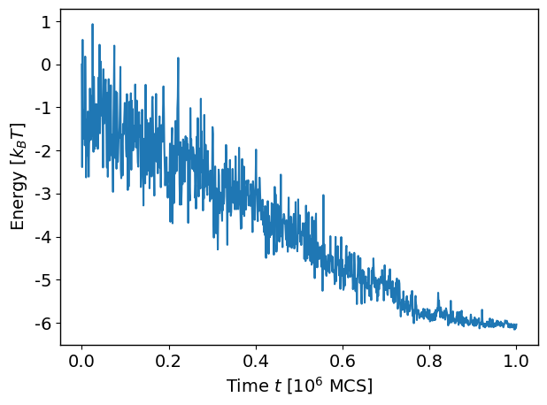
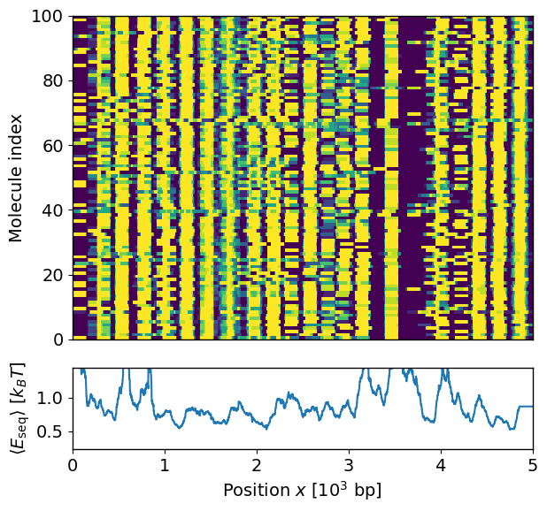

Tutorial 1: Quick Start
This tutorial explains how to use the higher-level API to perform nucleosome positioning Monte-Carlo simulations using the nucmc package. The following steps are performed within a Jupyter notebook environment. Jupyter notebook is not automatically provided within the supplied Conda environment file, but it can be installed as follows:
conda activate nucmc
conda install jupyterlab ipywidgets
Pre-requisite data files
To begin, we download some example methylation footprinting data for the promoter region of the gene Oct4, with a coverage of 5 kbp. These data are available from the GitLab repository, and they would have been automatically downloaded when doing git clone of the project and stored in the directory example/tut01_quick_start/experiment/raw_data. There are four files in this directory:
segments.size- a file containing the size of each DNA fiber segment.chromatin.tsv- the methylation footprinting scores outputted from ModKit for chromatinized DNA.unmethylated.tsv- footprinting scores for control samples where the DNA fibers are unmethylated.methylated.tsv- footprinting scores for control samples where the fibers are fully methylated.
segments.size simply contains the identifier and length (in bp) of the DNA segment:
[1]:
!cat example/tut01_quick_start/experiment/raw_data/segments.size
chrom length
Oct4 5000
And here is the top few lines of the chromatin.tsv file outputted from ModKit (note that these files have already been trimmed to include only the necessary columns in order to reduce file size):
[2]:
!head -n5 example/tut01_quick_start/experiment/raw_data/chromatin.tsv
read_id ref_position chrom mod_qual mod_code
m84140_251219_135204_s2/221451669/ccs 0 Oct4 0 a
m84140_251219_135204_s2/221451669/ccs 1 Oct4 0 a
m84140_251219_135204_s2/221451669/ccs 2 Oct4 0 a
m84140_251219_135204_s2/221451669/ccs 3 Oct4 0 a
Note: It is important to keep the header when outputting the data from ModKit. nucmc uses this to identify the relevant data columns to keep for any downstream analysis. In particular, it requires data from the following columns (as per modkit extract full output, see https://nanoporetech.github.io/modkit/intro_extract.html):
Column name |
Description |
Loaded column index |
|---|---|---|
read_id |
name of the read |
0 |
ref_position |
aligned 0-based reference sequence position |
1 |
chrom |
name of aligned contig |
2 |
mod_qual |
probability of the base modifcation in the next column |
3 |
mod_code |
base modification code from the MM tag |
4 |
Loading the data files and performing normalization
The first step towards performing the simulations is loading the data above into an MethyPrintExperiment object. We set up some variables for convenience:
[3]:
from pathlib import Path
exp_dir = Path("example/tut01_quick_start/experiment")
raw_dir = exp_dir/"raw_data"
chromsize = raw_dir/"segments.size"
test_file = raw_dir/"chromatin.tsv"
unmeth_file = raw_dir/"unmethylated.tsv"
meth_file = raw_dir/"methylated.tsv"
The data files above can be loaded using the nucmc.preprocess method. Note that you need to write out the parameter names when passing the arguments:
[4]:
import nucmc
exp_data = nucmc.preprocess(chromsize=chromsize,
test_file=test_file,
unmeth_file=unmeth_file,
meth_file=meth_file)
Reading example/tut01_quick_start/experiment/raw_data/chromatin.tsv ...
Reading example/tut01_quick_start/experiment/raw_data/unmethylated.tsv ...
Reading example/tut01_quick_start/experiment/raw_data/methylated.tsv ...
Normalizing against control samples ...
exp_data is a MethPrintExperiment object, which contains only the relevant attributes from the ModKit output that we need for running the simulations. We can use the raw property to access these underlying data. For instance, to view the footprinting data for the chromatinized DNA fiber for the Oct4 segment, we do the following:
[5]:
exp_data.raw["Oct4"].test_data
[5]:
| mol_index | pos | mod_qual | mod_code | |
|---|---|---|---|---|
| 0 | 0 | 0 | 0.000000 | a |
| 1 | 0 | 1 | 0.000000 | a |
| 2 | 0 | 2 | 0.000000 | a |
| 3 | 0 | 3 | 0.000000 | a |
| 4 | 0 | 6 | 0.000000 | a |
| ... | ... | ... | ... | ... |
| 240224 | 99 | 4991 | 0.000000 | a |
| 240225 | 99 | 4992 | 0.994141 | a |
| 240226 | 99 | 4995 | 0.000000 | a |
| 240227 | 99 | 4997 | 0.000000 | a |
| 240228 | 99 | 4998 | 0.000000 | a |
240229 rows × 4 columns
As well as the raw data, the object also contains the normalized methylation signal, or the methylation probability \(p_M(x)\) for each molecule (see Simulation Model on how we defined it). Since we have provided control datasets (fully methlyated and unmethylated DNA fibers), the normalization was done taking into account of them. \(p_M\) is stored in exp_data.analysis, a dictionary of data frames containing any analysis results for each chromosome or DNA segment. More specifically,
we look for the column meth_prob in the data frame:
[6]:
exp_data.analysis["Oct4"]["meth_prob"]
[6]:
| 0 | 1 | 2 | 3 | 4 | 5 | 6 | 7 | 8 | 9 | ... | 4990 | 4991 | 4992 | 4993 | 4994 | 4995 | 4996 | 4997 | 4998 | 4999 | |
|---|---|---|---|---|---|---|---|---|---|---|---|---|---|---|---|---|---|---|---|---|---|
| 0 | 0.591933 | 0.591933 | 0.592183 | 0.619995 | 0.618872 | 0.642932 | 0.642932 | 0.642932 | 0.657117 | 0.668517 | ... | 0.587834 | 0.587834 | 0.587834 | 0.587834 | 0.587834 | 0.587834 | 0.587834 | 0.587834 | 0.587834 | 0.587834 |
| 1 | 0.692357 | 0.692357 | 0.692686 | 0.720485 | 0.719323 | 0.741835 | 0.741835 | 0.741835 | 0.753910 | 0.763212 | ... | 0.595421 | 0.595421 | 0.595421 | 0.595421 | 0.595421 | 0.595421 | 0.595421 | 0.595421 | 0.595421 | 0.595421 |
| 2 | 0.790831 | 0.790831 | 0.791238 | 0.819024 | 0.817825 | 0.838818 | 0.838818 | 0.838818 | 0.848823 | 0.856069 | ... | 0.583645 | 0.583645 | 0.583645 | 0.583645 | 0.583645 | 0.583645 | 0.583645 | 0.583645 | 0.583645 | 0.583645 |
| 3 | 0.890475 | 0.890475 | 0.890960 | 0.918734 | 0.917496 | 0.936953 | 0.936953 | 0.936953 | 0.944864 | 0.950028 | ... | 0.635289 | 0.635289 | 0.635289 | 0.635289 | 0.635289 | 0.635289 | 0.635289 | 0.635289 | 0.635289 | 0.635289 |
| 4 | 0.790441 | 0.790441 | 0.790847 | 0.818634 | 0.817435 | 0.838434 | 0.838434 | 0.838434 | 0.848447 | 0.855701 | ... | 0.603965 | 0.603965 | 0.603965 | 0.603965 | 0.603965 | 0.603965 | 0.603965 | 0.603965 | 0.603965 | 0.603965 |
| ... | ... | ... | ... | ... | ... | ... | ... | ... | ... | ... | ... | ... | ... | ... | ... | ... | ... | ... | ... | ... | ... |
| 95 | 0.691577 | 0.691577 | 0.691906 | 0.719705 | 0.718543 | 0.741067 | 0.741067 | 0.741067 | 0.753158 | 0.762477 | ... | 0.569106 | 0.569106 | 0.569106 | 0.569106 | 0.569106 | 0.569106 | 0.569106 | 0.569106 | 0.569106 | 0.569106 |
| 96 | 0.691577 | 0.691577 | 0.691906 | 0.719705 | 0.718543 | 0.741067 | 0.741067 | 0.741067 | 0.753158 | 0.762477 | ... | 0.580992 | 0.580992 | 0.580992 | 0.580992 | 0.580992 | 0.580992 | 0.580992 | 0.580992 | 0.580992 | 0.580992 |
| 97 | 0.692747 | 0.692747 | 0.693077 | 0.720876 | 0.719713 | 0.742219 | 0.742219 | 0.742219 | 0.754286 | 0.763580 | ... | 0.621292 | 0.621292 | 0.621292 | 0.621292 | 0.621292 | 0.621292 | 0.621292 | 0.621292 | 0.621292 | 0.621292 |
| 98 | 0.592713 | 0.592713 | 0.592964 | 0.620776 | 0.619652 | 0.643700 | 0.643700 | 0.643700 | 0.657869 | 0.669252 | ... | 0.599573 | 0.599573 | 0.599573 | 0.599573 | 0.599573 | 0.599573 | 0.599573 | 0.599573 | 0.599573 | 0.599573 |
| 99 | 0.790831 | 0.790831 | 0.791238 | 0.819024 | 0.817825 | 0.838818 | 0.838818 | 0.838818 | 0.848823 | 0.856069 | ... | 0.599780 | 0.599780 | 0.599780 | 0.599780 | 0.599780 | 0.599780 | 0.599780 | 0.599780 | 0.599780 | 0.599780 |
100 rows × 5000 columns
This is now a good checkpoint to save the processed experimental data, which can be done using the save method. This stores the relevant raw data and analyses we have done into a single HDF5 file.
[7]:
exp_h5 = exp_dir/"analysis.h5"
exp_data.save(exp_h5)
We can reload this file later using the load method:
[8]:
from nucmc.experiment.methdata import MethPrintExperiment
new_exp_h5 = MethPrintExperiment.load(exp_h5)
print(new_exp_h5)
MethPrintExperiment(chroms, raw, analysis, global_analysis)
Performing nucleosome positioning sampling simulations
To start the simulations, we first create a configuration file specifying the parameter values. At the moment, the package only supports annealing simulations, where the temperature of the system is gradually lowered during the simulation. The list of parameters required are as follows:
Name |
Description |
|---|---|
nucbp |
The amount of DNA (in bp) occupied by a bound nucleosome (e.g., 147 bp) |
llink |
Length (in bp) of the linker DNA |
mu |
Chemical potential (in units of \(k_BT\); see Simulation Model). The energy associated with non-specific binding of nucleosome to DNA |
start_temp |
Start temperature |
end_temp |
End temperature |
cool_option |
How to adjust temperature over time. Options are “linear”, “geometric”, or “constant” |
nsweep |
Number of “sweeps” or timesteps in the simulation |
print_freq |
Frequency (in sweeps) at which to record simulation data |
emax |
The maximum energy cost allowed from the methylation footprinting data |
The file can be in .json or .yml format. For example, in .yml format the file looks as follows:
[9]:
!cat example/tut01_quick_start/simulation/sim_params.yml
nucbp: 147
llink: 50
mu: 1.0
start_temp: 1.0
end_temp: 0.01
cool_option: "geometric"
nsweep: 1000000
print_freq: 1000
emax: 10.0
Alternatively, we can specify these parameters directly within python by utilizing the SimSettings object:
[10]:
from nucmc.simulation.engine import SimSettings
settings = SimSettings(
nucbp=147,
llink=50,
mu=1.0,
start_temp=1.0,
end_temp=0.01,
cool_option="geometric",
nsweep=1000000,
print_freq=1000,
emax=10)
Next, we need extract the methylation probabilities \(p_M\) from the processed data and store them in a dictionary:
[11]:
meth_prob = {"Oct4": exp_data.analysis["Oct4"]["meth_prob"]}
We now use the nucmc.run method to run the simulations. This method requires specifying the chromosomes (DNA segments) we would like to perform the sampling, the number of simulations to conduct (nsim), the simulation parameters (settings) and the methylation probability profile for each molecule in each chromosome (meth_prob). We also need to specify the output directory (out_path) where the simulation results will be stored. The simulations can be run with in parallel using
multiple processes; this can be set using nworker (default is 1). By default, the verbose option is set to True, allowing a progress bar to be displayed in the terminal when the simulations are running, with an estimation of the time remaining before all jobs are complete.
[12]:
sim_dir = Path("example/tut01_quick_start/simulation/result/") # Note that this dir must not exists
sim_data = nucmc.run(chroms=exp_data.chroms,
nsim=10,
seed=2346,
meth_prob=meth_prob,
settings=settings,
out_path=sim_dir,
nworker=10)
With nworker=10, the simulations should take around a few minutes to complete.
Analyzing the simulation results
Before diving into further analysis, it is good to first inspect the raw simulation data and check that the results are reasonable. First, we check that the total energy of the system has reached a steady state:
[13]:
nucmc.plot_energy(chrom="Oct4", mol=0, run=0, dataset=sim_data)

Second, we plot how the nucleosome positions change over time as the temperature decreases using the nucmc.plot_nuc_pos method (say for molecule 0, run 0 in the Oct4 DNA segment), enabling the plot_eseq option to show the sequence-specific energy landscape used during the simulation:
[14]:
nucmc.plot_nuc_pos(chrom="Oct4", mol=0, run=0, dataset=sim_data, plot_eseq=True)

The nucleosome locations are shown in yellow in this plot, and they behave as one would expect: as the temperature decreases, the extent of repositioning and shuffling reduces, and the nucleosomes freeze into a final set of positions. Also, comparing with the sequence-specific energy landscape \(E_{\text{seq}}\), we see that the nucleosomes tend to avoid the maxima and sit near the minima as expected. To get a sense of the overall picture of nucleosome positioning across all molecules, we
use nucmc.analyze to perform some basic quantification of the simulated nucleosome positions:
[15]:
nucmc.analyze(dataset=sim_data)
This method computes the average number of nucleosomes (mean_nnuc) and the average nucleosome occupancy (occup) for each molecule. The latter is defined as
where \(s_i^{(n)} = 1\) if, in the \(n\)th simulation, a nucleosome occcupies base-pair \(x\) and \(0\) otherwise.
These results are stored in data.analysis. For instance, to retrieve the average number of nucleosomes in each molecule in Oct4, we do the following:
[16]:
sim_data.analysis["Oct4"]["mean_nnuc"]
[16]:
| 0 | |
|---|---|
| 0 | 20.0 |
| 1 | 17.9 |
| 2 | 19.0 |
| 3 | 17.8 |
| 4 | 18.2 |
| ... | ... |
| 95 | 18.6 |
| 96 | 19.0 |
| 97 | 16.8 |
| 98 | 19.1 |
| 99 | 19.0 |
100 rows × 1 columns
To visualize the averaged nucleosome occupancy across all molecules, we use the nucmc.plot_occup method, and again we enable the plot_eseq option to see correspondence between the nucleosome positions and the underlying energy landscape:
[17]:
nucmc.plot_occup(chrom="Oct4", dataset=sim_data, plot_eseq=True)

Finally, we can save our analyses of the simulation results into an HDF5 file that can be retrieved later for further post-processing:
[18]:
sim_data.save(sim_dir/"results.h5")